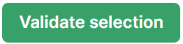
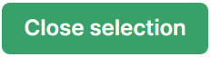

Campaign Tracking - By Indicator
SEARCH TIP Press CTRL + F (Windows and Linux) or CMD + F (Mac) to search within this page.
To access this screen, click: Data entry > Campaign tracking > Campaign tracking - By indicator.
Click the button to return to the Home Screen.
Some actions, such as screen access, are permitted only for authorized users, that is, users with the appropriate profile. In other words, if the user does not have the right profile, the user cannot perform the action.
To configure this security (also called user rights), complete the following steps:
-
Define the profiles in the Profile Management screen.
-
Define users and attach one or more profiles to them in the User Management screen.
-
Assign user rights to the desired profiles in the Profile Matrix screen.
The table below contains screen actions that are related to user rights:
| Module | Screen | Action |
|---|---|---|
|
Campaign tracking |
Campaign tracking - by indicator |
Screen access |
|
Send a reminder for the validation of indicators |
||
|
Send a reminder to answer questions raised about indicators |
||
|
Send a reminder for the review of pending questions |
||
|
Send a reminder for the entry of indicators |
Introduction
This screen tracks the progress of nonhistorical data collection campaigns. For each entity, you can monitor indicator status across five stages: not started, started, validated locally, questioned, and closed.
- Historical campaigns: Proforma data collected by import through the Data Import screen
- Nonhistorical campaigns: Data collected by manual entry through the Data Collection Campaigns screen
To create campaigns, see Campaign Set Up or Data Recovery.
The display is configured through the following point of view (POV) selections:
-
Campaign
-
Chapter
-
Theme
-
Section
-
Indicator
-
Consolidate the progress: Determines the scope of displayed indicators.
POV Selection Option Screen Display Scope No
Only the number and percentage of indicators deployed on each entity
Yes
Number and percentage of indicators consolidated from all child entities, aggregated at parent entity levels.
NOTE Indicators with unavailable data are included in the tracking counts.
You can also:
-
Set up and send email notifications for data entry and validation, question answering and reviewing
-
Validate and Close All the Indicators of a campaign for one or multiple entities
-
Navigate to the Campaign Details you are tracking
{kind=link}
Description of Table Columns
The table contains the following columns:
| Column | Description |
|---|---|
|
Entity |
The content of this column depends on the selection made from the Consolidate the progress drop-down menu in the POV:
|
|
Not started |
Number of indicators not yet started (percentage not displayed for this status). |
|
Started |
Percentage and number of started indicators. |
|
Validated locally |
Percentage and number of locally validated indicators. |
|
Questions |
Number of indicators for which questions are unanswered and answered. |
|
Closed |
Percentage and number of closed indicators. |
The Percentage and number of indicators column, below the Started, Validated locally, and the Closed columns, contains the following items:
-
A percentage
-
A ratio
-
A color dot:
-
 if the indicator percentage is 0%
if the indicator percentage is 0% -
 if the indicator percentage is between 1% and 99%
if the indicator percentage is between 1% and 99% -
 if the indicator percentage is 100%
if the indicator percentage is 100%
-
Description of the Screen Buttons
This screen contains the following buttons:
| Button | Action |
|---|---|
|
|
Go back to Home Screen. |
|
|
Access the Mail Settings screen to set up email notifications. |
|
|
Provides access to notification actions:
|
|
|
Ask the authorized user to input indicator values that are missing. See Send Email Notifications. |
|
|
Send email notifications to ask the authorized user to validate unvalidated indicators. |
|
|
Send email notifications to ask the authorized user to answer unanswered questions. |
|
|
Send email notifications to ask the authorized user to review unreviewed questions. |
|
|
Validate all indicators for an entity. See Validate and Close All the Indicators. |
|
|
Close all validated indicators for an entity. See Validate and Close All the Indicators. NOTE This button appears after validating all campaign indicators for an entity. |
|
 |
Validate all indicators for one or multiple selected entities. See Validate and Close All the Indicators. NOTE This button appears after selecting one or multiple entities that have unvalidated indicators. |
|
 |
Close all validated indicators for one or multiple selected entities. See Validate and Close All the Indicators. NOTE This button appears after selecting one or multiple entities that have validated indicators. |
|
|
Set Up Email Notifications
To set up email notifications:
-
Click the button at the top left of the table.
The Mail Settings screen appears.
-
Set up the email notifications as desired.
NOTE You can disable the possibility of sending email notifications. If you do so, the buttons that allow you to send these emails will disappear.
To know more about these buttons, see the Send Email Notifications section.
Send Email Notifications
NOTE The access to one or multiple actions to send email notifications depends on your user profile.
See the Security Notes above.
To send email notifications:
-
Check the desired checkboxes to select one or more entities.
-
Click the button, then the appropriate notification button (see table below):
Button Purpose Ask the authorized user to input indicator values that are missing.
Ask the authorized user to validate unvalidated indicators.
Ask the authorized user to answer unanswered questions.
Ask the authorized user to review unreviewed questions.
-
Click OK.
An email notification is sent to authorized users.
Validate and Close All the Indicators
You can validate, then close all the indicators of the campaign selected in the POV for one or multiple entities.
To validate all the campaign indicators for an entity:
-
Click the button at the end of the line.
The Validate all indicators pop-up window appears.
-
Click OK.
The system validates all indicators for the desired entity.
To close all validated indicators for an entity:
-
Click the button at the end of the line.
The Close all indicators pop-up window appears.
-
Click OK.
The system closes all indicators for the desired entity.
To validate all the campaign indicators for multiple entities:
-
Check the desired boxes on the left of the table to select one or more entities.
NOTE To select all entities, check the box located at the beginning of the Total line.
The button appears.
-
Click the button.
The Validate pop-up window appears.
-
Click OK.
The system validates all indicators for selected entities and the button appears.
To close all the validated indicators of the campaign for multiple entities:
-
Check the desired boxes on the left of the table to select one or more entities.
NOTE To select all entities, check the box located at the beginning of the Total line.
-
Click the button.
The Close pop-up window appears.
-
Click OK.
The system closes all indicators for selected entities.
WARNING You cannot validate and close all indicators when at least one indicator fails to meet the defined thresholds or consistency checks. If so, an icon is displayed by default at the beginning of the line for the entity concerned. A warning message also appears when you proceed with validation.
Navigate to the Campaign Details
To access the details of the campaign you are tracking, click the percentage or ratio inside any indicator status cell.
The Data Collection Campaigns screen appears.
Export a Campaign Tracking Table
To export the table, click the  button in the toolbar at the top right of the screen.
button in the toolbar at the top right of the screen.
An Excel file is automatically downloaded to your computer.